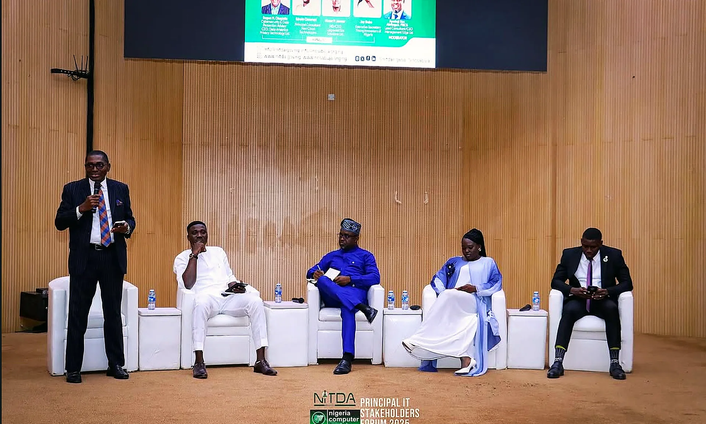
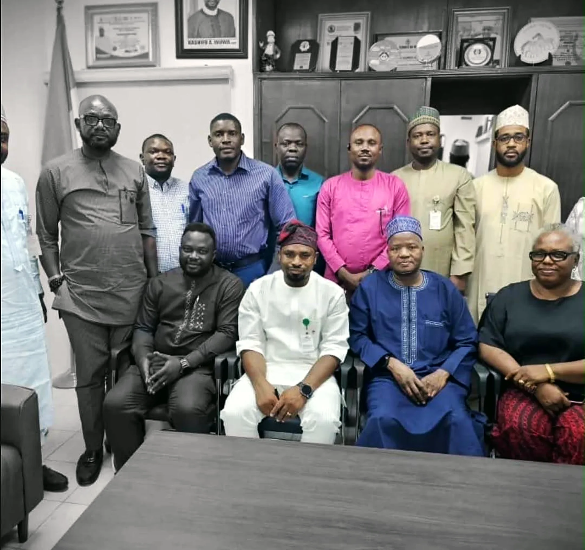
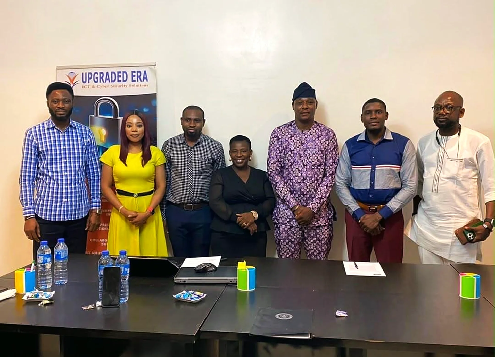
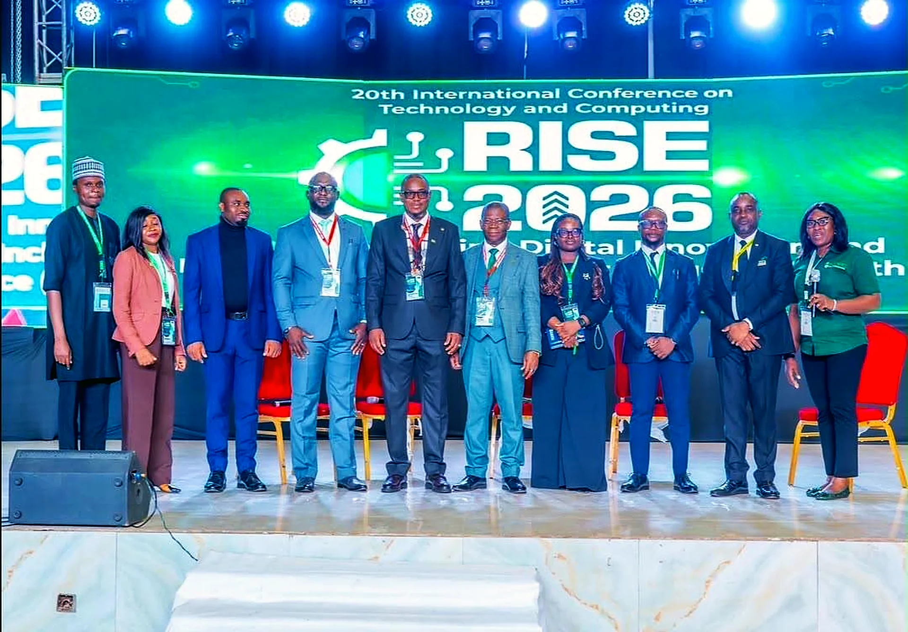

Techies’ Hangout Initiative (THI)
Physical, online, TV and radio conversations where IT professionals discuss technology, business, the national economy and youth development, with startup mentoring and collaboration built in.

Long-running initiatives that connect professional learning with schools, young people, industry and the public.
Physical, online, TV and radio conversations where IT professionals discuss technology, business, the national economy and youth development, with startup mentoring and collaboration built in.

Virtual knowledge sharing and training sessions, launched to create value for NCS members and widen access to professional learning wherever members are.

A chapter initiative to improve access to computer systems and ICT exposure in government secondary schools across the FCT.

A youth technology initiative introducing young people to computing. Contact the chapter for current availability and how to take part.

A platform for technology and digital economy engagement in the Federal Capital Territory, bringing together policymakers, industry and professionals.